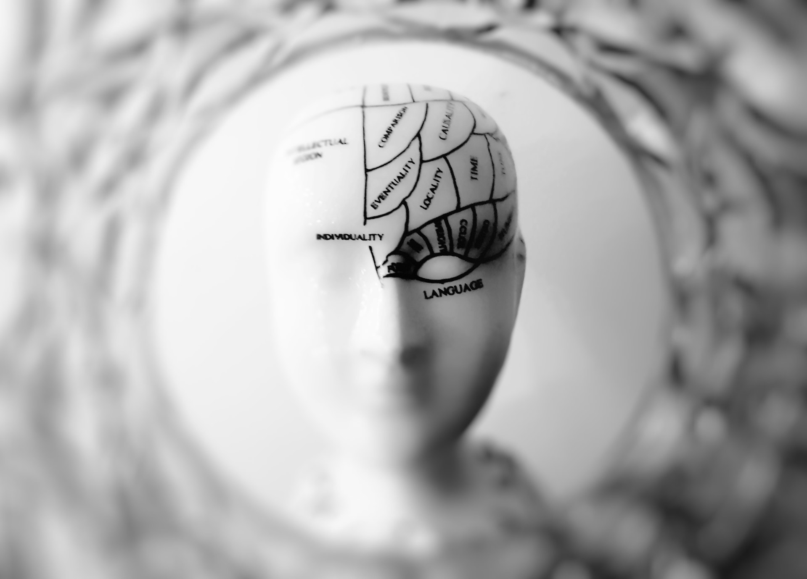

Bem vindo ao futuro da Informação
Na era da tecnologia, discernir a verdade da falsidade é essencial. O nosso projeto está aqui para combater o dilúvio de notícias falsas que inundam as redes sociais e confundem a sociedade globalizada. Imagine um mundo onde a desinformação é detectada antes mesmo de se espalhar, onde a verdade prevalece sobre a manipulação. Bem, você não precisa mais imaginar. Estamos trazendo isso para você agora.

Fake News e a Sociedade Vulnerável
As notícias falsas, as tão conhecidas fake news, são um vírus que se espalha rapidamente pela nossa sociedade. Quando a verdade se torna escassa e as informações confiáveis são difíceis de encontrar, as pessoas se tornam presas fáceis para a manipulação. Suas opiniões se tornam frágeis, suas decisões, incertas.
Com a ascensão da internet e das redes sociais, as informações são usadas para manipular a opinião pública. Cada um de nós fica confinado em uma bolha de informações, incapaz de compreender as perspectivas dos outros. É hora de mudar isso.

Informação Confiável em um Mundo Conectado
Nosso objetivo é claro: desenvolver um sistema que detecte fake news nas redes sociais. Vamos coletar dados em tempo real, aplicar técnicas de machine learning e análise de processamento de linguagem natural para verificar a veracidade das informações que você encontra online.
E o que isso significa para você? Significa que você receberá alertas quando algo não estiver certo. Significa que você terá uma probabilidade clara de saber se uma notícia é falsa ou verdadeira. Significa que você terá o poder de discernir a verdade em um mar de desinformação.
Junte-se a nós nesta jornada em direção a um ambiente de informação mais confiável e crítico. Juntos, podemos tornar o mundo online um lugar mais seguro para todos. É hora de abraçar o futuro da informação confiável. Está pronto para a revolução? Vamos começar agora.